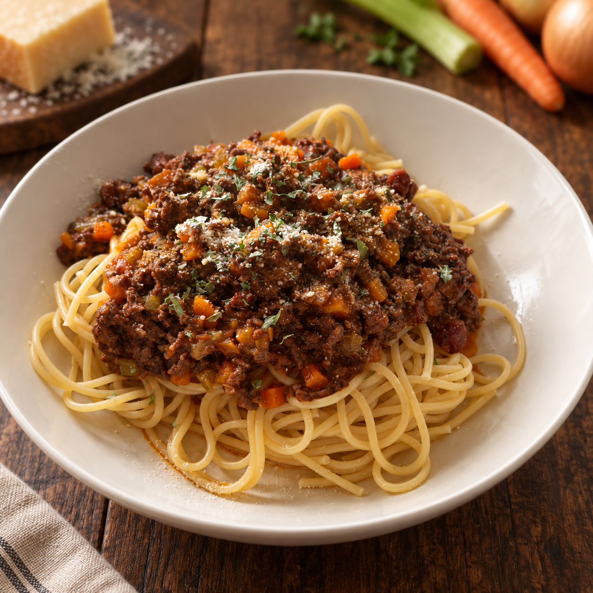

Unsere Klassiker · Pasta
Spaghetti Bolognese

Eine kräftige Bolognese mit einem fein gewürfelten Soffritto aus Zwiebel, Karotten und Sellerie, knuspriger Pancetta und saftig angebratenem Rinderhackfleisch. Dazu passen klassisch Spaghetti, aber auch Tagliatelle oder Rigatoni nehmen die langsam geschmorte Sauce wunderbar auf.
Zutaten
400 gSpaghetti, Tagliatelle oder Rigatoni
100 gPancetta oder Speckwürfel
500 gRinderhackfleisch
2Karotten
2 StangenSellerie
1 großeZwiebel
2 ELTomatenmark
100 mlPassierte Tomaten
500 mlHühnerbrühe
150 mlRotwein
1 kleiner SchussMilch, etwa 50 ml
EtwasOlivenöl
Nach BedarfSalz und Pfeffer
Nach BedarfParmesan, frisch gerieben
Zubereitung
- Zwiebel, Karotten und Stangensellerie in sehr kleine, möglichst gleichmäßige Würfel schneiden. Dieses Gemüse bildet das Soffritto.
- Etwas Olivenöl in einem großen Topf erhitzen. Das Soffritto darin bei mittlerer Hitze etwa 8–10 Minuten weich und leicht goldgelb anschwitzen. Anschließend aus dem Topf nehmen und kurz beiseitestellen.
- Die Pancetta oder Speckwürfel im selben Topf anrösten. Das Rinderhackfleisch dazugeben und bei kräftiger Hitze krümelig und deutlich gebräunt anbraten. Mit Salz und Pfeffer würzen.
- Das Tomatenmark unterrühren und gründlich mitrösten. Mit Rotwein ablöschen und kurz einkochen lassen.
- Das Soffritto zurück in den Topf geben. Passierte Tomaten und Hühnerbrühe angießen und einen kleinen Schuss Milch unterrühren.
- Die Sauce bei niedriger Hitze etwa 60 Minuten sanft köcheln lassen und gelegentlich umrühren. Wenn es schnell gehen muss, darf sie auch etwas kürzer köcheln – länger schmeckt allerdings besser. 😉
- Die gewünschte Pasta in reichlich Salzwasser al dente kochen. Vor dem Abgießen etwas Nudelwasser auffangen.
- Die Bolognese abschmecken. Bei Bedarf etwas Nudelwasser einrühren, die Pasta mit der Sauce vermengen oder die Sauce darauf anrichten und mit frisch geriebenem Parmesan servieren.
Tipp
Je länger die Sauce ganz sanft köchelt, desto runder wird ihr Geschmack. Sie lässt sich deshalb wunderbar am Vortag vorbereiten und schmeckt aufgewärmt sogar noch besser.